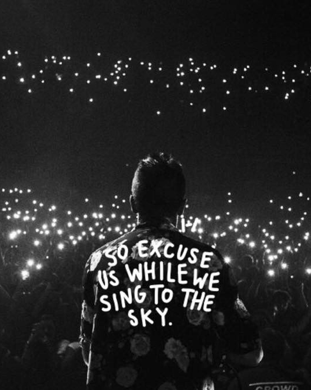
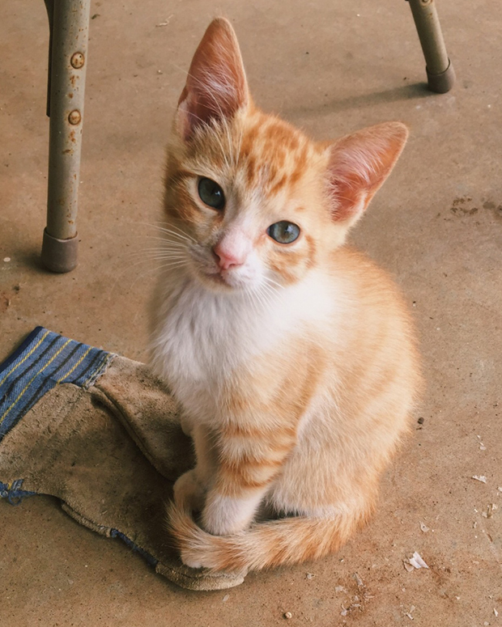

Music and Cats
Who doesn't like music? And cats? Because GT likes them both! For anyone who likes to see photos of adorable kittens and cute cats memes, and would like to know my taste in Music, kindly click the button below!
Go to Mewsic World
Go to Mewsic World
Music


Cats
